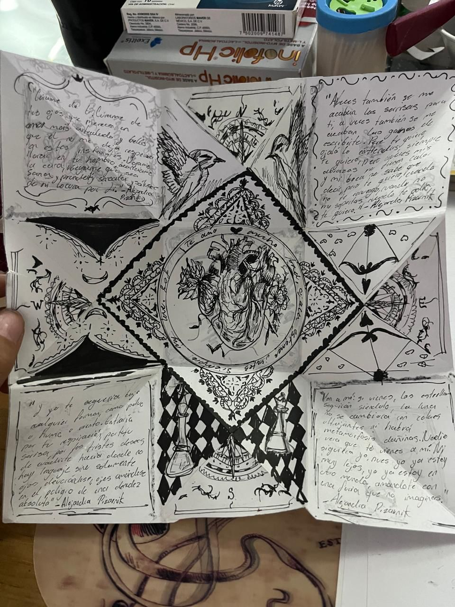

¿Que Somos?
Somos un espacio donde el amor, la nostalgia, la amistad y los sueños encuentran su forma en papel. Nos dedicamos a crear cartas artesanales, hechas a mano, pensadas para dedicar, regalar o simplemente atesorar. Cada carta es una pequeña obra de arte: llena de detalles, ilustraciones, palabras cuidadosamente elegidas y la intención de tocar corazones.
Creemos que en un mundo que a veces corre demasiado rápido, detenerse a escribir y regalar algo hecho desde el alma es un acto de amor profundo. Nuestras cartas son para quienes todavía creen en la magia de una nota inesperada, en el poder de una palabra honesta, en la belleza de los sentimientos vulnerables. Queremos ayudarte a decir aquello que a veces se siente tan grande que no cabe en la voz, pero que sí puede caber en un suspiro escrito, en un dibujo, en una carta.
No solo vendemos papeles con palabras; construimos recuerdos, envolvemos emociones y regalamos momentos que ojalá duren toda la vida.
¿Quieres una carta?
Mas regalos si no los propones :p

"Encuentro de Estrellas"
Esta carta cuenta una historia sin necesidad
de muchas palabras: dos almas destinadas a
encontrarse, como cometas que cruzan el
cielo o como partículas bailando en el
espacio. Con ilustraciones llenas de ternura,
cada trazo es un suspiro, cada color, un
pequeño universo. Ideal para regalar a quien
hace que el mundo gire más despacio y el
amor se sienta inevitable.
Esta carta cuenta una historia sin necesidad
de muchas palabras: dos almas destinadas a
encontrarse, como cometas que cruzan el
cielo o como partículas bailando en el
espacio. Con ilustraciones llenas de ternura,
cada trazo es un suspiro, cada color, un
pequeño universo. Ideal para regalar a quien
hace que el mundo gire más despacio y el
amor se sienta inevitable.

"Jardin de Caricias"
Entre corazones entrelazados, flores que
brillan y dulces gatitos dibujados a mano, esta
carta es un poema visual para quienes creen
en la magia del amor sencillo y verdadero. Un
regalo personalizado que late al ritmo de dos
nombres, unidos como un jardín secreto que
florece en papel.
Entre corazones entrelazados, flores que
brillan y dulces gatitos dibujados a mano, esta
carta es un poema visual para quienes creen
en la magia del amor sencillo y verdadero. Un
regalo personalizado que late al ritmo de dos
nombres, unidos como un jardín secreto que
florece en papel.

"Suspiros de Amor"
Un universo de amor y alegría vive en cada
pliegue de esta carta. Con la ternura eterna
de Snoopy y palabras que abrazan el corazón,
esta creación combina colores vibrantes,
pequeños secretos guardados en sobres y
mensajes que susurran ‘Te amo’ en dos
idiomas. Perfecta para regalar un pedacito
de felicidad en cualquier momento del año.
Un universo de amor y alegría vive en cada
pliegue de esta carta. Con la ternura eterna
de Snoopy y palabras que abrazan el corazón,
esta creación combina colores vibrantes,
pequeños secretos guardados en sobres y
mensajes que susurran ‘Te amo’ en dos
idiomas. Perfecta para regalar un pedacito
de felicidad en cualquier momento del año.

“Amor eterno”
Dos esqueletos sellan un abrazo que
trasciende el tiempo, rodeados de besos
suspendidos en el aire. Esta carta es una
promesa: la de un amor que ni la muerte
puede apagar. Una pieza melancólica y
apasionada, ideal para almas románticas que
encuentran belleza en lo eterno y lo imposible.
Dos esqueletos sellan un abrazo que
trasciende el tiempo, rodeados de besos
suspendidos en el aire. Esta carta es una
promesa: la de un amor que ni la muerte
puede apagar. Una pieza melancólica y
apasionada, ideal para almas románticas que
encuentran belleza en lo eterno y lo imposible.

“Jardín de memorias”
Una carta que florece en cada palabra.
Pétalos de colores vibrantes enmarcan un
mensaje íntimo y esperanzador, como un
susurro al oído de alguien amado.
Hecha con la calidez de un abrazo y el suspiro de la
distancia, es un refugio para quienes creen
que el amor puede brotar incluso en los
rincones más tristes.
Una carta que florece en cada palabra.
Pétalos de colores vibrantes enmarcan un
mensaje íntimo y esperanzador, como un
susurro al oído de alguien amado.
Hecha con la calidez de un abrazo y el suspiro de la
distancia, es un refugio para quienes creen
que el amor puede brotar incluso en los
rincones más tristes.

“Santuario de tinta y susurros”
Una carta que se despliega como un antiguo
hechizo: en cada pliegue, versos que acarician
y heridas que sanan. Dibujos detallados como
sueños entrelazados, pájaros, corazones,
símbolos secretos… todo resguardado en un
relicario de nostalgia y ternura. Es un fragmento de alma atrapado en papel,
perfecto para quien ama la belleza cruda de
las emociones.
Una carta que se despliega como un antiguo
hechizo: en cada pliegue, versos que acarician
y heridas que sanan. Dibujos detallados como
sueños entrelazados, pájaros, corazones,
símbolos secretos… todo resguardado en un
relicario de nostalgia y ternura. Es un fragmento de alma atrapado en papel,
perfecto para quien ama la belleza cruda de
las emociones.
Enviar tu diseño personalizado
Realizar comentarios